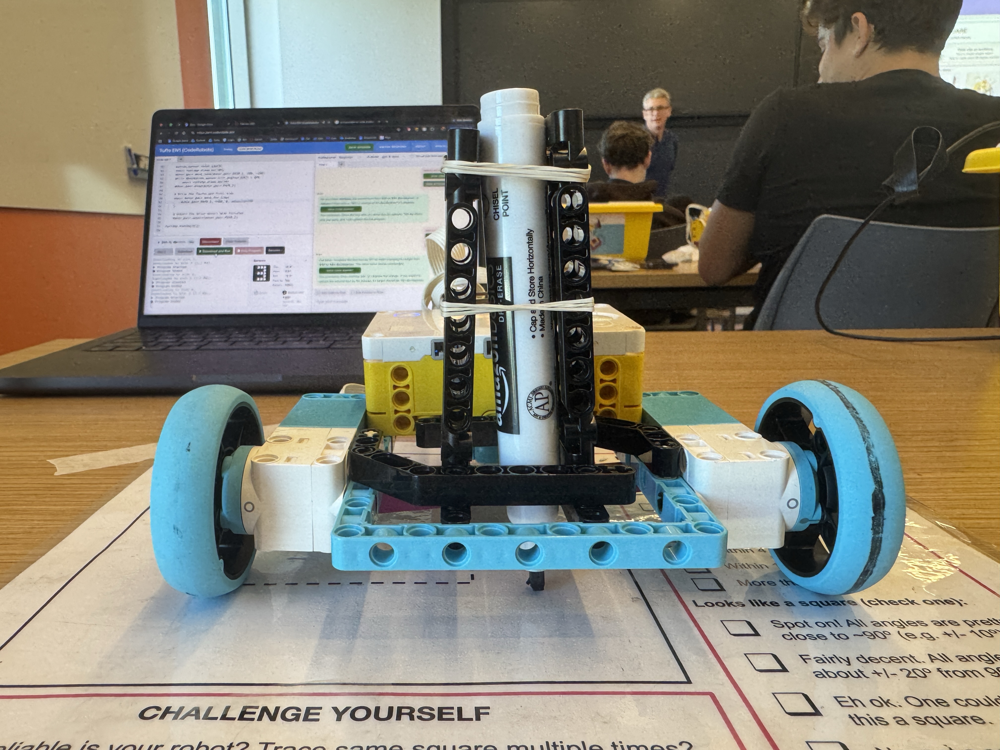

The goal of this project was to draw a square on the provided guideline sheet. I used an idea from Project 6: the center between two motors stays centered when the robot turns. I modified the car so the marker sat directly between the motors on the LEGO frame.
Using the coding robot system, I used AI to help write the program. The program drives straight for a set time and speed, turns 90 degrees, and repeats this three times to return to its starting position.
I was able to draw a square within the guidelines, but there is still room to improve. Uneven friction across the surface can significantly affect the turns; even a small difference can throw the program off its intended path.
# Setup: left drive motor on port B and right drive motor on port F.
from hub import port, motion_sensor
import runloop
import motor_pair
async def main():
# Pair the drive motors so they can move together.
motor_pair.pair(motor_pair.PAIR_1, port.B, port.F)
# Drive the first side.
await motor_pair.move_for_time(
motor_pair.PAIR_1, 1700, 0, velocity=180
)
# Make the first turn to 870 decidegrees.
motion_sensor.reset_yaw(0)
await runloop.sleep_ms(100)
motor_pair.move_tank(motor_pair.PAIR_1, 200, -200)
while abs(motion_sensor.tilt_angles()[0]) < 870:
await runloop.sleep_ms(10)
motor_pair.stop(motor_pair.PAIR_1)
# Drive the second side.
await motor_pair.move_for_time(
motor_pair.PAIR_1, 1500, 0, velocity=190
)
# Increase the second turn by 50: 830 + 50 = 880 decidegrees.
motion_sensor.reset_yaw(0)
await runloop.sleep_ms(100)
motor_pair.move_tank(motor_pair.PAIR_1, 200, -200)
while abs(motion_sensor.tilt_angles()[0]) < 900:
await runloop.sleep_ms(10)
motor_pair.stop(motor_pair.PAIR_1)
# Drive the third side.
await motor_pair.move_for_time(
motor_pair.PAIR_1, 1500, 0, velocity=185
)
# Keep the third turn at 840 decidegrees.
motion_sensor.reset_yaw(0)
await runloop.sleep_ms(100)
motor_pair.move_tank(motor_pair.PAIR_1, 200, -200)
while abs(motion_sensor.tilt_angles()[0]) < 800:
await runloop.sleep_ms(10)
motor_pair.stop(motor_pair.PAIR_1)
# Drive the fourth and final side.
await motor_pair.move_for_time(
motor_pair.PAIR_1, 1480, 0, velocity=190
)
# Unpair the drive motors when finished.
motor_pair.unpair(motor_pair.PAIR_1)
runloop.run(main())